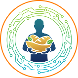
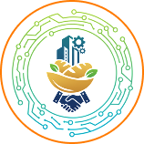
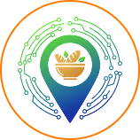

o Mesa Solidária é uma plataforma digital que conecta doadores, voluntários e familias em situação de vulnerabilidade. Com tecnologia acessível, promovemos a distribuição eficiente de alimentos, reduzimos o desperdicio e fortalecemos a solidariedade por meio de pontos de coleta e uma rede colaborativa.
o Mesa Solidária é uma plataforma digital que conecta doadores, voluntários e familias em situação de vulnerabilidade. Com tecnologia acessível, promovemos a distribuição eficiente de alimentos, reduzimos o desperdicio e fortalecemos a solidariedade por meio de pontos de coleta e uma rede colaborativa.
o Mesa Solidária é uma plataforma digital que conecta doadores, voluntários e familias em situação de vulnerabilidade. Com tecnologia acessível, promovemos a distribuição eficiente de alimentos, reduzimos o desperdicio e fortalecemos a solidariedade por meio de pontos de coleta e uma rede colaborativa.
Beneficiário
Voluntário
Doador
Ponto de Coleta
A plataforma conecta beneficiários, doadores, voluntários e pontos de coleta. Doações são cadastradas e armazenadas em locais parceiros. Voluntários ou os próprios beneficiários retiram os alimentos, com apoio de site e app que garantem agilidade e transparência.

Vinicius
Felipe
Matheus
Fernando